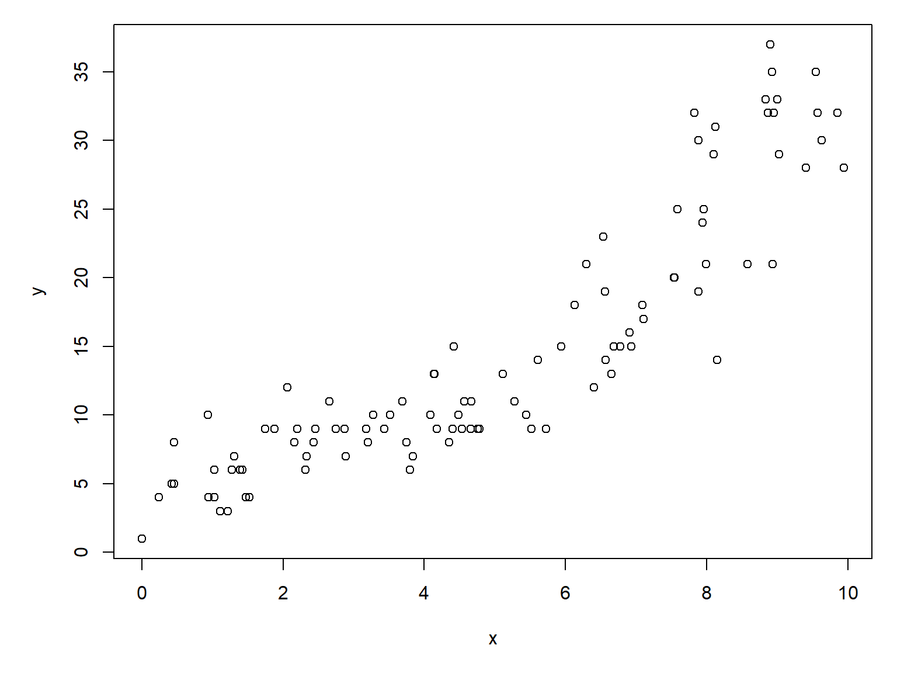
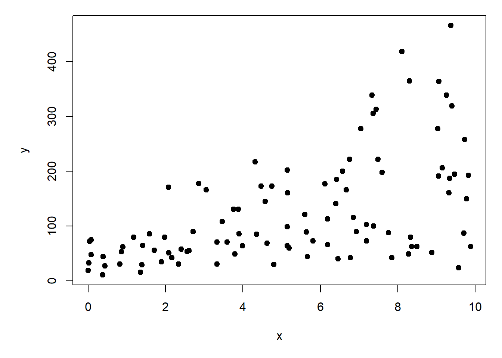

Over the next two modules we will extend our JAGS language knowledge and our statistical skills to another important class of statistical methods: generalized linear models (GLM). GLMs are an indispensable tool in the modern biologist’s toolbox. The GLM framework includes all linear models, as well as a wide variety of other techniques:
Gamma GLM for overdispersed continuous data
Poisson and negative binomial models for counts
Logistic regression for binary outcomes
Binomial regression for proportional data
And many more.
These models may appear different on the surface, and take different kinds of data as inputs, but are actually the same kind of model. This is much more apparent when fitting models in JAGS than in R.
This module explores GLMs for count data. Count data are exactly what they sound like: values resulting from counting things. Count data take the form of non-negative integers. Non-negative integers, however, are not necessarily count data. For example, summer temperatures in Georgia can be rounded to the nearest integer, but they will not be counts.
NoteAbout this module
For this module you will need a recent versions of R, JAGS, and the R packages rjags and R2jags (Plummer (2003), Plummer (2021), R Core Team (2025), Su and Masanao Yajima (2021)). This module and all code examples were developed and tested using R version 4.5.1, JAGS 4.3.1, rjags version 4-17, and R2jags version 0.8-9.
5.1 GLM refresher
Generalized linear models (GLM) extend the linear model by relaxing two assumptions:
GLM allows response distributions other than the normal distribution
GLM allows the linear predictor to be on a scale other than the scale that the data are on; the data and linear predictor scales are related by a link function.
Here we use matrix shorthand for the linear predictor to indicate that \(\boldsymbol{\beta}\) is a vector of coefficients (\(\beta_0\), \(\beta_1\), \(\beta_2\), and so on), and \(\mathbf{x}\) is the design matrix that contains the predictor variables (\(x_1\), \(x_2\), and so on; see Section 4.1.1).
where \(\theta\) stands in for other parameters of the response distribution (if there are any), and \(\eta\) (“eta”) is the expected value on the scale of the linear predictor–which may or may not be the same scale as \(y\) and \(E\left(y\right)\). We relate \(E\left(y\right)\) and \(\eta\) via a link function:
Technically, the response distribution in a GLM must be one of the exponential family. This family includes a huge variety: the normal, exponential, gamma, beta, Poisson, and geometric. Under certain conditions, the binomial, negative binomial, and multinomial can be included as well.
This means that linear regression itself is a special case of GLM, with a normal response distribution and the identity link function (the identity function of any value is that value itself).
The Poisson GLM models the logarithm of expected count \(\lambda\) as a linear function of predictors \(\boldsymbol{\beta}\mathbf{x}\). Here we use matrix shorthand for the linear predictor to indicate that \(\boldsymbol{\beta}\) is a vector of coefficients (\(\beta_0\), \(\beta_1\), \(\beta_2\), and so on), and \(\mathbf{x}\) is the design matrix that contains the predictor variables (\(x_1\), \(x_2\), and so on). Instead of saying that the Poisson GLM “models the logarithm of the expected count”, we could also say that it uses a log link function.
Notice that the Poisson distribution has only one parameter, \(\lambda\) (“lambda”), which is both the mean and variance of the distribution. This means that we should not be surprised or concerned if a scatterplot suggests heteroscedasticity with variance increasing with the expected value. This property of the Poisson distribution and the log link function means that a “cone” of points on a scatterplot does not necessarily imply heteroscedasticity or overdispersion. Overdispersion means that the data contain more variance than would be expected under a Poisson distribution. If overdispersion is suspected, you can try a negative binomial GLM instead of a Poisson GLM (Section 5.3).
5.2.2 Example
5.2.2.1 Data simulation
Let’s simulate a dataset and analyze it.
# random number seed for reproducibilityset.seed(123)# sample sizen <-100# coefficientsbeta0 <-1.5beta1 <-0.2# x valuesx <-runif(n, 0, 10)# linear predictoreta <- beta0 + beta1 * x# inverse link functionlambda <-exp(eta)# response variabley <-rpois(n, lambda)# put everything in a data framedx <-data.frame(x=x,y=y)# make the plotpar(mar=c(5.1, 5.1, 1.1, 1.1))plot(x,y)

The relationship between \(y\) and \(x\) looks almost linear, but because we are clever biologists, we know that linear models are not appropriate for two reasons. First, linear models predict continuous responses, and counts are not continuous (they are discrete). Second, linear models can predict negative responses, and counts cannot be negative. So, we will try Poisson regression.
5.2.2.2 Frequentist analysis
We could fit a Poisson GLM of y vs. x in R with this command:
mod01 <-glm(y~x, data=dx, family=poisson)# model summary:summary(mod01)
Call:
glm(formula = y ~ x, family = poisson, data = dx)
Coefficients:
Estimate Std. Error z value Pr(>|z|)
(Intercept) 1.46480 0.07144 20.5 <2e-16 ***
x 0.21025 0.01011 20.8 <2e-16 ***
---
Signif. codes: 0 '***' 0.001 '**' 0.01 '*' 0.05 '.' 0.1 ' ' 1
(Dispersion parameter for poisson family taken to be 1)
Null deviance: 552.212 on 99 degrees of freedom
Residual deviance: 75.704 on 98 degrees of freedom
AIC: 513.17
Number of Fisher Scoring iterations: 4
The frequentist analysis gets pretty close to the real coefficients, and the model reduced the deviance by an impressive 86%.
1-mod01$deviance/mod01$null.deviance
[1] 0.8629071
5.2.2.3 Bayesian analysis with JAGS
Now let’s repeat the analysis in JAGS. The analysis takes a little more work in JAGS, but it might be worth it.
First, define a model file for the Poisson GLM.
# Poisson GLM with one predictor xmod.name <-"jags-glm-poisson.txt"sink(mod.name)cat(" model{ # priors # reasonable ranges...extreme values may cause # numerical overflow. Use some number sense! beta0 ~ dnorm(0, 1) beta1 ~ dnorm(0, 1) # likelihood for(i in 1:n){ y[i] ~ dpois(lambda[i]) log(lambda[i]) <- beta0 + beta1 * x[i] }#i }#model", fill=TRUE)sink()
Then, set up the usual MCMC parameters for JAGS and tell JAGS what parameters to monitor.
As always, we need a function to define initial values for the MCMC chains. Remember that EVERY parameter in the model defined as a stochastic node needs an initial value. This means any variable that is ever on the left side of a ~ symbol.
# function to define initial values for MCMC chainsinit.fun <-function(nc){# output will be a list with one element per chain res <-vector("list", length=nc)# fill in a for loop over chainsfor(i in1:nc){# note that res[[i]] <-list(beta0=rnorm(1, 0, 1),beta1=rnorm(1, 0, 1)) }#ireturn(res)}# generate the intial valuesinits <-init.fun(nchains)
Package up the data for JAGS
# package data for JAGSin.data <-list(x=dx$x, y=dx$y, n=n)
Compiling model graph
Resolving undeclared variables
Allocating nodes
Graph information:
Observed stochastic nodes: 100
Unobserved stochastic nodes: 2
Total graph size: 505
Initializing model
And inspect the results:
mod02
Inference for Bugs model at "jags-glm-poisson.txt", fit using jags,
3 chains, each with 50000 iterations (first 10000 discarded), n.thin = 100
n.sims = 1200 iterations saved. Running time = 58.27 secs
mu.vect sd.vect 2.5% 25% 50% 75% 97.5% Rhat n.eff
beta0 1.456 0.07 1.327 1.410 1.455 1.500 1.596 1.001 1200
beta1 0.211 0.01 0.192 0.205 0.212 0.217 0.230 1.000 1200
deviance 511.122 2.01 509.212 509.699 510.528 511.821 516.818 1.000 1200
For each parameter, n.eff is a crude measure of effective sample size,
and Rhat is the potential scale reduction factor (at convergence, Rhat=1).
DIC info (using the rule: pV = var(deviance)/2)
pV = 2.0 and DIC = 513.1
DIC is an estimate of expected predictive error (lower deviance is better).
The model converged, and the estimated values for beta0 and beta1 are pretty close to the truth…and, to the estimates from the frequentist version of the model.
Just as with linear models, the best way to present the results of your Poisson GLM is to plot the model predictions against the data. Plotting the expected value \(\lambda\) against the data is easy. What’s tricky is plotting the uncertainty. We will plot uncertainty as the 95% credible interval (CRI) of the predicted value \(\lambda\). Unless you think carefully about what you’re doing, it’s easy to confuse plotting uncertainty about the expected values with plotting uncertainty about the observable values. In frequentist terms, the former is a confidence interval (CI) and the latter is a prediction interval (PI).
# set up x values at which to predictpn <-100px <-seq(min(dx$x), max(dx$x), length=pn)prx <-data.frame(x=px)# extract permuted posteriors for# model parametersmx <- mod02$BUGSoutput$sims.matrixnpost <-nrow(mx)# make matrix to hold model predictionspred <-matrix(NA, nrow=nrow(prx), ncol=nrow(mx))# fill matrix in a loopfor(i in1:npost){ pred[,i] <- mx[i,"beta0"] + mx[i,"beta1"] * prx$x}#i# summarize across columns of pred to# get predicted values and 95% credible intervalprx$lo <-apply(pred, 1, quantile, 0.025)prx$mn <-apply(pred, 1, quantile, 0.5)prx$up <-apply(pred, 1, quantile, 0.975)
The values in prx are still on the link scale, where the linear predictor lives. So, we need to apply the inverse link function to get values on the data scale.
The interval plotted is the 95% credible interval (CRI), not a confidence interval. Remember that a credible interval is calculated from samples of the posterior distribution, not estimated from a fitted function like a frequentist confidence interval (CI) (see Section 1.4.6). That means we can say, “we are 95% certain that the true expected value lies within the interval shown by the dashed lines.
A CRI is often similar in width to a CI, but they are not the same.
It may have been tempting to put a very wide prior on the intercept and slope, like we did for coefficients in a linear model. But, this can be a bad idea when working on the log scale. In the linear models in the last module, we usually used priors like \(Normal\left(0,\ 100\right)\) for beta0 and beta1 terms. This was fine for linear models, where the response variable and linear predictor were on the same scale. For our Poisson GLM, however, the parameters are on the logarithmic scale because of the log link function. Because the linear predictor (\(\beta_0+\beta_1x\)) is exponentiated in the model likelihood, calculations like the following might occur:
\[\log{\left(\lambda\right)}=200+1500x\]
which really means
\[\lambda=e^{200+1500x}\]
which even for a small value like \(x=1\) would evaluate to an absurdly large number, too large to be represented in R or JAGS. R can represent values with an absolute value up to about \(1.79\times10^{308}\). Anything larger returns Inf (or -Inf, for negative numbers).
.Machine$double.xmax
[1] 1.797693e+308
which is approximately \(10^{228}\) times greater than the number of atoms in the universe. Similarly, R can only represent numbers as small as about \(2.2\times10^{-308}\). So, even if R and JAGS could represent those numbers, would they really be relevant to your analysis? Probably not.
Any of these could cause inappropriately large or small values of _i within JAGS. Values that are too large cannot be represented in JAGS and may be treated as infinity…which will cause an error. Values that are too small will be arbitrarily close to 0, and may be treated as 0…which will also cause an error. When you try to feed a JAGS distribution function with an illegitimate input, such as a negative or 0 value for dpois(), you will get the dreaded “Node inconsistent with parents” error. This error can be very hard to track down, because it is not possible to see current parameter values within JAGS. This means you have to examine each node and work out if extreme values of any of its inputs could lead to illegitimate values.
In JAGS, the expected value of a Poisson distribution must be finite and strictly positive. So, we need to be careful to set up the model in such a way as to avoid these kinds of numerical issues.
There are two takeaways from this digression. First, you need to be smart about what numbers you are implying in your JAGS models. Your model might have the correct relationships, but if the numbers lead to illegitimate values, it is all for naught. Try rewriting the model above with the extremely broad priors and see what happens.
Second, sometimes you need to think like a programmer instead of a biologist or statistician. There’s an old saying: “If it’s stupid and its works, then it’s not stupid.” Many people might opt to relate x and y with a construction like this in their JAGS code:
# stochastic part as usual
y[i] ~ dpois(lambda[i])
# limit lambda to [0.0001, 9999]
lambda[i] <- max(0.0001, min(9999, exp(eta[i])))
# calculate log scale expected value eta
eta[i] <- exp(beta0 + beta1 * x[i])
What does this do? By separating the value of the linear predictor eta[i] from the expected value of the Poisson distribution lambda[i], this code allows us to limit the values that go into dpois(). This practice is less elegant than choosing appropriate prior values, but it’s not wrong. In fact, this practice is explicitly recommended for some GLMs by Kéry (2010). We’ll use it below when we get to logistic regression (see Section 6.1).
Some might argue that putting this kind of limit in your JAGS model might bias the parameter estimates. In my experience, however, this is not the case. As long as you don’t make the acceptable interval too narrow, the MCMC algorithm will probably still find the right solution. The only issue I’ve ever had is when the “true” coefficient value might be very close to one of the limits. In that case, the parameter estimates can be biased high if the correct value is just above a limit, or biased low if the correct value is just below a limit.
Another option might be to simply add a small constant to \(\lambda\). This would solve the problem of \(\lambda\) that were too small, but not the problem of \(\lambda\) that were too large. Personally, I prefer the first solution, because the estimated beta0 and beta1 are for the expected value, not the expected value minus a small constant.1
5.3 Negative binomial GLM for overdispersed counts
Poisson GLMs assume that the single parameter \(\lambda\) of the Poisson distribution is both the mean and the variance of the response distribution (i.e., that \(\lambda=\mu=\sigma^2\)). This is not always the case in real datasets. Many biological processes that produce counts have a variance much greater than their mean. This phenomenon is called overdispersion. The “over” in “overdispersion” means “more variance than expected for a Poisson distribution with the same mean”.
One way to deal with overdispersion is to use a distribution other than the Poisson. Most textbooks recommend either the quasi-Poisson or the negative binomial. The negative binomial is easier to work with in most software packages because it has a full likelihood function.
5.3.1 Definition
There are several definitions of the negative binomial distribution. The definition biologists usually use has a mean \(\mu\) or \(\lambda\) and an overdispersion parameter called \(\theta\) (“theta”) or \(k\). Smaller \(\theta\) leads to more variance; at larger \(\theta\) the distribution becomes indistinguishable from the Poisson.
In the R functions that deal with the negative binomial, \(\theta\) is referred to as the size parameter. As \(\theta\) gets smaller, the fraction \(\frac{\lambda^2}{\theta}\) gets larger, and the distribution picks up more and more variance compared to the Poisson distribution (because for a Poisson, \(\sigma^2=\lambda\)). Thus, as \(\theta\) increases to positive infinity, the fraction gets smaller and the variance approaches that of a Poisson.
Other people define the negative binomial as a gamma-Poisson mixture . That is, a Poisson distribution with expected value \(\lambda\), where \(\lambda\) itself varies as a gamma distribution. Both can be obtained in JAGS, which uses an altogether different definition of the negative binomial. In JAGS, the expected value (linear predictor) needs to be converted to a probability parameter \(\pi\). The r parameter here is the overdispersion parameter which is also fit as part of the model.
\[y\sim \text{NegBin}\left(\pi,r\right)\]
\[\pi=\frac{r}{r+\mu}\]
\[\log{\mu}=\boldsymbol{\beta}\mathbf{x}\]
This multi-step process if fraught with opportunities for numerical errors, including the dreaded “Node inconsistent with parents”. Here be dragons.
5.3.2 Example
5.3.2.1 Data simulation
Let’s simulate a dataset and analyze it.
# random number seed for reproducibilityset.seed(42)# sample sizen <-100# coefficientsbeta0 <-4# interceptbeta1 <-0.15# slopetheta <-3# overdispersion# x valuesx <-runif(n, 0, 10)# linear predictoreta <- beta0 + beta1 * x# inverse link functionlambda <-exp(eta)# response variabley <-rnbinom(n, mu=lambda, size=theta)# assemble into data framedn <-data.frame(x=x, y=y)# make the plotpar(mar=c(5.1, 5.1, 1.1, 1.1))plot(x,y, pch=19)

5.3.2.2 Frequentist analysis
There is no base R function for a negative binomial GLM, so we need to find an add-on package for it. The most common package for this is probably MASS.
library(MASS)
Now let’s fit the negative binomial GLM.
mod3 <-glm.nb(y~x, data=dx)summary(mod3)
Call:
glm.nb(formula = y ~ x, data = dx, init.theta = 201722.9736,
link = log)
Coefficients:
Estimate Std. Error z value Pr(>|z|)
(Intercept) 1.46480 0.07145 20.5 <2e-16 ***
x 0.21025 0.01011 20.8 <2e-16 ***
---
Signif. codes: 0 '***' 0.001 '**' 0.01 '*' 0.05 '.' 0.1 ' ' 1
(Dispersion parameter for Negative Binomial(201723) family taken to be 1)
Null deviance: 552.169 on 99 degrees of freedom
Residual deviance: 75.698 on 98 degrees of freedom
AIC: 515.17
Number of Fisher Scoring iterations: 1
Theta: 201723
Std. Err.: 2992532
Warning while fitting theta: iteration limit reached
2 x log-likelihood: -509.173
The model estimates for the parameters are pretty close to reality.
5.3.2.3 Bayesian analysis with JAGS
The Bayesian version is a little more involved. First, write a model file for the model. Notice the difference from the Poisson model.
As always, we need a function to define initial values for the MCMC chains. Remember that EVERY parameter in the model defined as a stochastic node needs an initial value. This means any variable that is ever on the left side of a ~ symbol.
# function to define initial values for MCMC chainsinit.fun <-function(nc){# output will be a list with one element per chain res <-vector("list", length=nc)# fill in a for loop over chainsfor(i in1:nc){# note that res[[i]] <-list(beta0=rnorm(1, 0, 1),beta1=rnorm(1, 0, 1),r=rgamma(1,shape=0.1,rate=0.1)) }#ireturn(res)}# generate the intial valuesinits <-init.fun(nchains)
Package up the data for JAGS
# package data for JAGSin.data <-list(x=dx$x, y=dx$y, n=n)
Compiling model graph
Resolving undeclared variables
Allocating nodes
Graph information:
Observed stochastic nodes: 100
Unobserved stochastic nodes: 3
Total graph size: 707
Initializing model
And inspect the results:
mod03
Inference for Bugs model at "jags-glm-negbin-v1.txt", fit using jags,
3 chains, each with 50000 iterations (first 10000 discarded), n.thin = 100
n.sims = 1200 iterations saved. Running time = 109.42 secs
mu.vect sd.vect 2.5% 25% 50% 75% 97.5% Rhat n.eff
beta0 1.463 0.079 1.310 1.405 1.463 1.517 1.611 1.004 490
beta1 0.210 0.012 0.188 0.202 0.210 0.218 0.234 1.003 680
r 49.875 16.328 25.530 38.044 47.255 58.720 89.167 1.001 1200
deviance 519.960 3.819 514.307 517.279 519.421 522.102 528.482 1.002 860
For each parameter, n.eff is a crude measure of effective sample size,
and Rhat is the potential scale reduction factor (at convergence, Rhat=1).
DIC info (using the rule: pV = var(deviance)/2)
pV = 7.3 and DIC = 527.2
DIC is an estimate of expected predictive error (lower deviance is better).
The parameters are pretty close to the truth.
We can also use the Poisson-Gamma mixture definition of the negative binomial, if you prefer that. The model file is very similar, and the initial values structure is the same.
Plummer, M. 2003. JAGS: A program for analysis of Bayesian graphical models using Gibbs sampling. Pp. 1–10 in Proceedings of the 3rd international workshop on distributed statistical computing. Vienna, Austria.
I once needed to model a population of deer, which could occur in groups on a landscape. We had a parameter for mean group size, but there was a problem. Using the Poisson distribution for group size would frequently predict groups of 0 deer…in other words, no group! Our solution was to reparametrize the model to work with “group size minus 1”. This meant that 0s returned from any Poisson draws would have 1 added to them, so the minimum group size in the model was a biologically reasonable 1. If it’s stupid but it works, then it isn’t stupid.↩︎